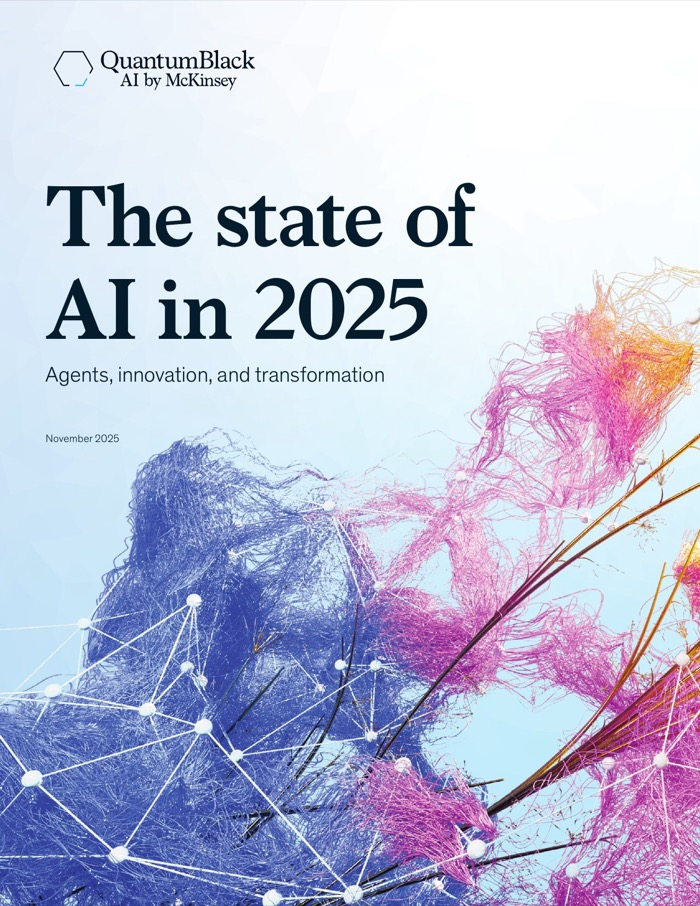
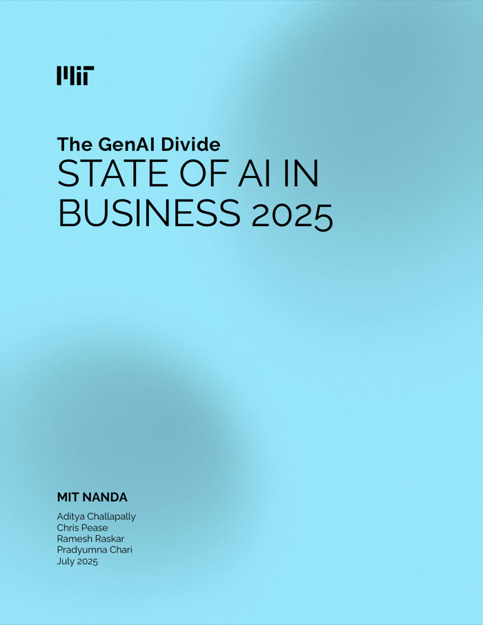
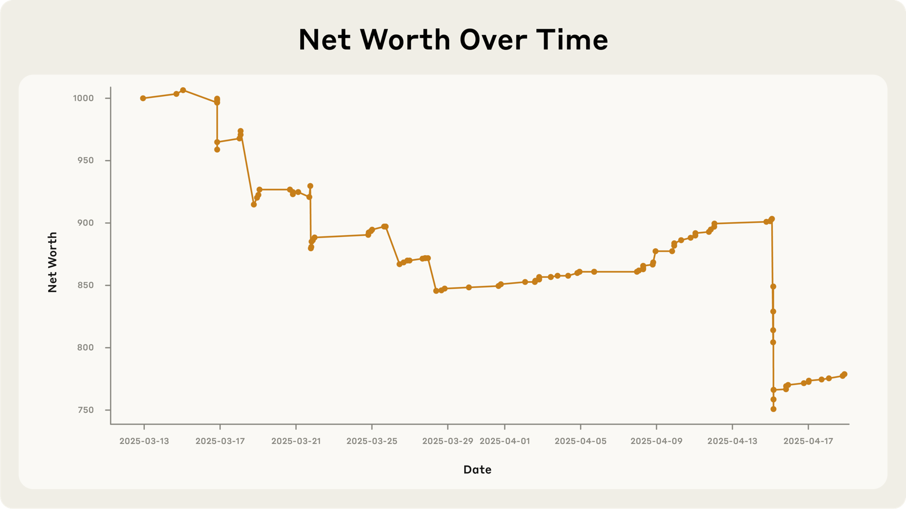
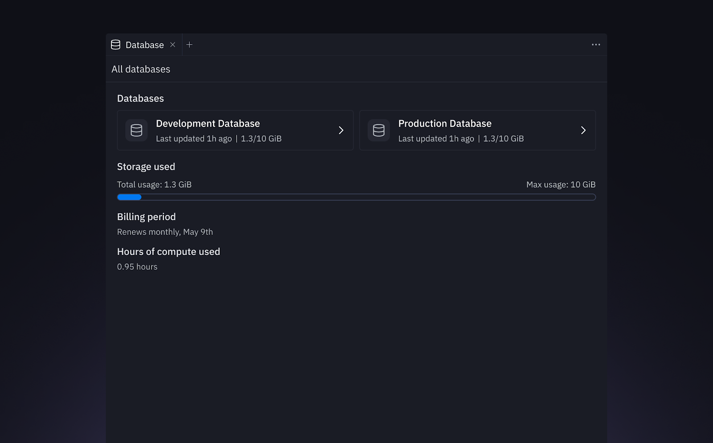
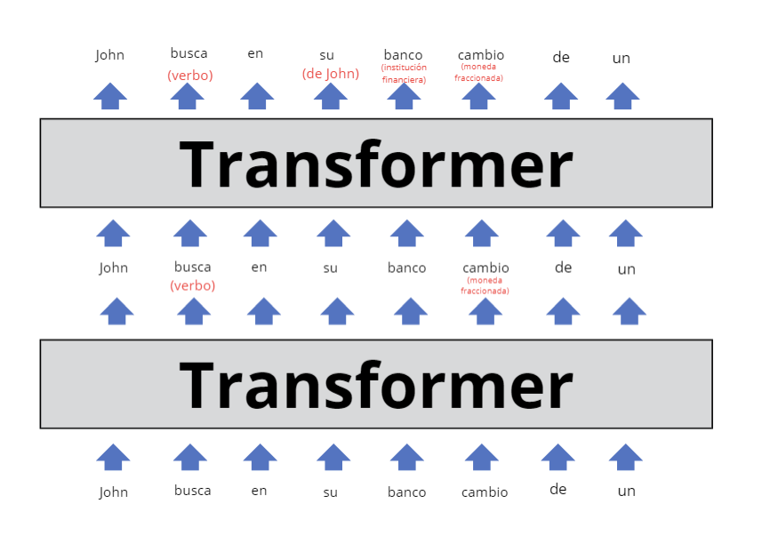

Cómo plantear un proyecto agéntico
Una guía en cinco pasos para idear, revisar, decidir, redactar y elegir la pila.
Una guía en cinco pasos
Idear
Una tarea real de un usuario
Revisar
Qué hace fracasar un proyecto
Decidir
¿Hace falta un agente?
Redactar
Los requerimientos iniciales
Elegir la pila
Según la complejidad
Al final de la sesión, tu grupo entrega la ficha inicial del proyecto, de una página.
Empieza por una tarea, no por la tecnología
Las buenas candidatas
Se repite
Ocurre muchas veces a la semana.
Exige decisiones
No basta seguir una lista fija.
Usa información no estructurada
Textos, correos, documentos o conversaciones.
Preguntas guía
- ¿Quién hace hoy la tarea?
- ¿Cada cuánto la hace?
- ¿Cuánto tiempo le toma?
- ¿Qué errores aparecen?
- ¿Qué datos usa?
Casos que sí funcionan
Uber: AutoCover
11 %de las pruebas nuevas de código que se revisan y se agregan a Uber.Artículo revisado por pares, ICSE-SEIP 2026.
Klarna: un caso mixto
En su primer mes, su asistente atendió 2.3 millones de conversaciones: dos de cada tres chats.
Lo afirma la propia empresa. En 2025 corrigió el rumbo (paso 2).
En tu grupo: listen tres tareas candidatas y elijan una.
Fuentes: Rastenis et al. (2026), ICSE-SEIP; comunicado de Klarna del 27 de febrero de 2024. Logotipos: Uber y Klarna, en Wikimedia Commons.


Los detalles de cada caso
- Uber. «AutoCover now generates about 11% of all new tests that are reviewed and added to Uber's codebase». La tasa de pruebas viables es cerca del 20 % en Java, 40 % en Go y 80 % en Python. En el editor, los usuarios aceptan cerca del 44 %. Rastenis et al. (2026)
- Klarna. «The AI assistant has had 2.3 million conversations, two-thirds of Klarna's customer service chats». La empresa dijo que hacía el trabajo de 700 agentes de tiempo completo. Klarna (2024, 27 de febrero)
Muchos proyectos fallan
Es una predicción de analistas. Razones: costos crecientes, valor de negocio poco claro o controles de riesgo insuficientes.
Encuesta en línea de junio y julio de 2025, con 1 993 participantes de 105 países.
Fuentes: Gartner (2025, 25 de junio), comunicado de prensa; McKinsey (2025), The state of AI in 2025. Las verticales explican el método y el caso de MIT NANDA.
El método de Gartner y de McKinsey
- Gartner. «Over 40% of agentic AI projects will be canceled by the end of 2027, due to escalating costs, unclear business value or inadequate risk controls». Se apoya en una encuesta de enero de 2025 a 3 412 asistentes de un webinar: 19 % invirtió mucho, 42 % con cautela, 8 % nada y 31 % espera.
- McKinsey. En ninguna función de negocio más del 10 % de las organizaciones escala agentes. La encuesta pondera a cada país según su peso en el PIB mundial.

Gartner bloquea la consulta automática de su sala de prensa. Su texto se leyó en CXOtoday (25 de junio de 2025). Portada: McKinsey & Company (2025).
El 95 % de MIT NANDA, con sus críticas
- El informe dice que el 95 % de las organizaciones no obtiene retorno de sus pilotos de IA generativa.
- Su método: 300 iniciativas públicas, 52 entrevistas y 153 encuestas. El propio informe se presenta como «Preliminary Findings».
- Las críticas: mide el éxito solo como impacto financiero de corto plazo. Además, el texto se contradice en el número de sectores.

Fuente y portada: Challapally et al. (2025), The GenAI Divide, MIT NANDA. Es un ejemplo de cifra que circula mucho y tiene un método débil.
Casos que salieron mal
Cursor
Su bot de soporte inventó que una suscripción sirve en un solo dispositivo.
Klarna
Su CEO admitió que el costo pesó demasiado y bajó la calidad.
Project Vend
Un agente manejó una tienda, perdió dinero y regaló descuentos.
Replit
Un agente borró una base de datos en producción.
Lo que tienen en común: faltó una verificación, un permiso o una persona en el momento clave.
Lectura del curso sobre los cuatro casos. Logotipos: Cursor, Klarna y Replit. Foto: Anthropic (2025).
Las fuentes de cada caso
- Cursor. El cofundador escribió: «Apologies - something very clearly went wrong here». Desde entonces, las respuestas de soporte hechas con IA van marcadas. Hacker News, 15 de abril de 2025
- Klarna. «As cost unfortunately seems to have been a too predominant evaluation factor when organising this, what you end up having is lower quality». Entrevista con Bloomberg, reproducida por The Star, 8 de mayo de 2025. Una semana después, el CEO aclaró que la IA atiende unos 1.3 millones de gestiones al mes (Big Technology).
- Project Vend. «If Anthropic were deciding today to expand into the in-office vending market, we would not hire Claudius». En la fase 2, con procedimientos, casi desaparecieron las semanas con pérdidas. Anthropic, 27 de junio de 2025 y 18 de diciembre de 2025
- Replit. El afectado escribió: «the AI Agent deleted our entire production database» (SaaStr). El 21 de julio, Replit anunció bases de datos separadas para desarrollo y producción. Blog de Replit
Dos evidencias en imágenes


Fuentes: Anthropic (2025, 27 de junio), Project Vend; Replit (2025, 21 de julio), blog de Replit.
La lista de revisión antes de empezar
- Hay datos sin información personal, o puedes crear datos sintéticos.
- El éxito se comprueba con casos concretos.
- Las acciones irreversibles pasan por una persona.
- El costo por tarea y el tiempo de respuesta son aceptables.
- Cumple la Ley 1581 de 2012 de protección de datos personales.
- Cabe en seis capas, una por sesión del curso.
Empieza por lo más simple
Tokens que consume cada forma, frente a un chat:
Fuente: Anthropic (2025, 13 de junio), How we built our multi-agent research system.
«La autonomía de los agentes implica costos más altos y la posibilidad de errores que se acumulan.»
Tres criterios para usar un agente
Decisiones complejas
Juicio, excepciones y contexto.
Reglas difíciles de mantener
Tantas reglas que cambiarlas cuesta.
Mucha información no estructurada
Lenguaje natural, documentos o conversaciones.
Si no se cumple ninguno, basta una solución determinista (OpenAI, 2025).
Gartner lo resume así: muchos casos que hoy se presentan como agénticos no necesitan un agente.
Las citas originales
- «Complex decision-making: Workflows involving nuanced judgment, exceptions, or context-sensitive decisions»
- «Difficult-to-maintain rules: Systems that have become unwieldy due to extensive and intricate rulesets»
- «Heavy reliance on unstructured data: Scenarios that involve interpreting natural language, extracting meaning from documents, or interacting with users conversationally»
- «Otherwise, a deterministic solution may suffice.» OpenAI (2025)
- «Many use cases positioned as agentic today don't require agentic implementations.» Gartner (2025), en la reproducción de CXOtoday.
El árbol de decisión
En tu grupo: ubiquen su idea en el árbol. La sesión 4 retoma este criterio con laboratorios.
La ficha inicial: nueve campos
Cómo llenar cada campo
Mal escrito y bien escrito
Tarea central
Criterio de éxito
Seis reglas de un buen requerimiento
- Una sola tarea central, en una o dos frases.
- Un criterio de éxito que se comprueba con casos.
- Cinco casos, cada uno con su entrada y su resultado esperado.
- Lo que el agente nunca debe hacer, escrito.
- Los puntos en que decide una persona.
- Un costo máximo por tarea y un tiempo de respuesta aceptable.
Tus primeras pruebas
El criterio de éxito y los cinco casos son las primeras pruebas de tu agente.
En el curso, cada etapa del agente se prueba.
La escalera de cinco niveles
- LLM directoSesiones 2 y 3
- FlujoSesión 4
- Agente con herramientasSesiones 4 y 5
- Agente con conocimiento y memoriaSesión 6
- OrquestaciónSesión 7
Todos los proyectos usan LangGraph y LangChain. Cambian las piezas que usa cada grupo.
Los cinco niveles de la pila
| Nivel | Cuándo usarlo | Piezas del stack | Sesión |
|---|---|---|---|
| 1. LLM directo | Una sola llamada resuelve la tarea | Un modelo de chat de LangChain con salida estructurada | 2 y 3 |
| 2. Flujo | Los pasos son siempre los mismos | Un grafo de LangGraph con nodos y aristas condicionales | 4 |
| 3. Agente con herramientas | El camino depende de lo que encuentra | create_agent, herramientas con @tool y MCP si conecta otros sistemas | 4 y 5 |
| 4. Agente con conocimiento y memoria | Necesita documentos propios o recordar entre conversaciones | Búsqueda sobre un índice, checkpointer y store | 6 |
| 5. Orquestación | Hay subtareas separables o acciones de riesgo | Supervisor y subagentes, guardrails y aprobación humana | 7 |
Piezas comunes y la regla
Modelo por API
Claude Haiku 5.5 o Gemini.
Pruebas
De cada etapa del agente.
Trazas
Locales, para ver cada paso.
React
Solo si el proyecto necesita interfaz.
La regla: elige el nivel más bajo que resuelva la tarea.
Sube de nivel solo cuando las pruebas muestren que hace falta.
Fuera del curso, una automatización simple podría resolverse con una plataforma low-code, como vimos en la charla 1.
Los cinco pasos
Idear
Tres tareas, una elegida
Revisar
La lista de seis casillas
Decidir
El árbol de decisión
Redactar
La ficha inicial
Elegir la pila
El nivel más bajo que sirva
Después de la pausa, cada grupo recorre estos pasos con su idea.
La lectura de la sesión 2
Lee y Trott (2023). Large language models, explained with a minimum of math and jargon. Understanding AI.
Hay una traducción autorizada al español: Grandes modelos de lenguaje (LLM): una explicación con un mínimo de matemáticas y tecnicismos (2024).
Entre 35 y 45 minutos. Las preguntas guía están en el trabajo independiente.

Imagen: Lee y Trott, traducción al español de Rubén Alvarez Escobar y Sylvia Elena Rodríguez (2024). Understanding AI
Referencias
Anthropic (2024, 19 de diciembre). Building effective agents. anthropic.com
Anthropic (2025, 13 de junio). How we built our multi-agent research system. anthropic.com
Anthropic (2025). Project Vend, fases 1 y 2. fase 1 · fase 2
OpenAI (2025). A practical guide to building agents. cdn.openai.com
Gartner (2025, 25 de junio). Gartner Predicts Over 40% of Agentic AI Projects Will Be Canceled by End of 2027. Leído en la reproducción de CXOtoday
Singla et al. (2025). The state of AI in 2025: Agents, innovation, and transformation. McKinsey. mckinsey.com
Challapally et al. (2025). The GenAI Divide: State of AI in Business 2025. MIT NANDA.
Rastenis et al. (2026). Automated Software Test Generation at Industry Scale Using a Multi-Agent Architecture and Workflow Integration. ICSE-SEIP '26. PDF
Klarna (2024, 27 de febrero). Klarna AI assistant handles two-thirds of customer service chats in its first month. klarna.com
Truell, M. (2025, 15 de abril). Comentario sobre el bot de soporte de Cursor. Hacker News
Replit (2025, 21 de julio). Introducing a safer way to vibe code with Replit databases. replit.com
Lee, T. B. y Trott, S. (2023, 27 de julio). Large language models, explained with a minimum of math and jargon. Understanding AI